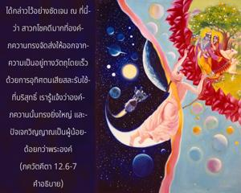
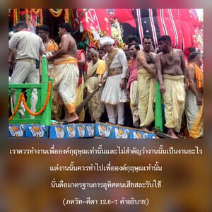
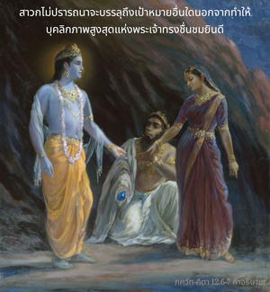

แต่พวกที่บูชาข้า ถวายกิจกรรมทั้งหมด และเสียสละแด่ข้าโดยไม่เบี่ยงเบน ปฏิบัติในการอุทิศตนเสียสละรับใช้ และทำสมาธิอยู่ที่ข้าเสมอ ตั้งจิตมั่นอยู่ที่ข้า โอ้ โอรสพระนาง ปฺฤถา ข้าคือผู้จัดส่งพวกเขาให้ออกจากมหาสมุทรแห่งการเกิดและการตายโดยเร่งด่วน



ได้กล่าวไว้อย่างชัดเจนตรงนี้ว่า สาวกโชคดีมากที่องค์ภควานฺทรงจัดส่งให้ออกจากความเป็นอยู่ทางวัตถุโดยเร็ว ด้วยการอุทิศตนเสียสละรับใช้ที่บริสุทธิ์เรารู้แจ้งว่าองค์ภควานฺนั้นทรงยิ่งใหญ่ และปัจเจกวิญญาณเป็นผู้น้อยด้อยกว่าพระองค์ หน้าที่ของเราคือถวายการรับใช้องค์ภควานฺ หากไม่กระทำเช่นนี้เราจะต้องรับใช้มายา
ดังที่ได้กล่าวไว้แล้วว่า องค์ภควานฺทรงชื่นชมยินดีกับการอุทิศตนเสียสละรับใช้เท่านั้น ฉะนั้น เราควรอุทิศตนเสียสละอย่างเต็มที่ ควรตั้งมั่นจิตอยู่ที่องค์กฺฤษฺณอย่างสมบูรณ์เพื่อบรรลุถึงพระองค์ เราควรทำงานเพื่อองค์กฺฤษฺณเท่านั้น และไม่สำคัญว่างานนั้นเป็นงานอะไร แต่งานนั้นควรทำไปเพื่อองค์กฺฤษฺณเท่านั้น นั่นคือมาตรฐานการอุทิศตนเสียสละรับใช้ สาวกไม่ปรารถนาจะบรรลุถึงเป้าหมายอื่นใดนอกจากทำให้บุคลิกภาพสูงสุดแห่งพระเจ้าทรงชื่นชมยินดี ภารกิจในชีวิตของเราคือทำให้องค์กฺฤษฺณทรงพอพระทัยจนเราสามารถเสียสละทุกสิ่งทุกอย่างเพื่อความพึงพอพระทัยของพระองค์ เหมือนกับ อรฺชุน ทรงกระทำที่สมรภูมิ กุรุกฺเษตฺร วิธีการนั้นง่ายมาก เราสามารถอุทิศตนเสียสละอยู่ในอาชีพของเรา และในขณะเดียวกันสวดภาวนา หเร กฺฤษฺณ หเร กฺฤษฺณ กฺฤษฺณ กฺฤษฺณ หเร หเร / หเร ราม หเร ราม ราม ราม หเร หเร การสวดภาวนาทิพย์เช่นนี้จะดึงดูดสาวกมาที่องค์ภควานฺ
ณ ที่นี้ องค์ภควานฺทรงสัญญาว่าโดยไม่ล่าช้าพระองค์จะจัดส่งสาวกผู้ปฏิบัติโดยบริสุทธิ์เช่นนี้ จากมหาสมุทรแห่งความเป็นอยู่ทางวัตถุ พวกที่เจริญในการปฏิบัติโยคะสามารถโอนย้ายดวงวิญญาณ ตามความปรารถนาของตนไปยังโลกใดก็ได้ที่ตนชอบด้วยวิธีโยคะ บุคคลอื่นจะฉวยโอกาสจากหลายวิธี แต่สำหรับสาวกได้กล่าวไว้อย่างชัดเจนตรงนี้ว่า องค์ภควานฺเองจะทรงมารับเขา สาวกไม่จำเป็นต้องรอให้มีประสบการณ์มากเพื่อย้ายโอนตนเองไปยังท้องฟ้าทิพย์
ใน วราห ปุราณ โศลกนี้ปรากฏ
นยามิ ปรมํ สฺถานมฺ
อรฺจิรฺ-อาทิ-คตึ วินา
ครุฑ-สฺกนฺธมฺ อาโรปฺย
ยเถจฺฉมฺ อนิวาริตห์
คำอธิบายคือ สาวกไม่จำเป็นต้องฝึกปฏิบัติ อษฺฏางฺค-โยค เพื่อโอนย้ายดวงวิญญาณของตนไปยังโลกทิพย์ องค์ภควานฺเองทรงเป็นผู้รับผิดชอบ โดยกล่าวไว้อย่างชัดเจนว่า พระองค์เองจะกลายมาเป็นผู้จัดส่ง เด็กน้อยที่อยู่ภายใต้การดูแลของผู้ปกครองโดยสมบูรณ์ สถานภาพของเขานั้นปลอดภัย ในทำนองเดียวกัน สาวกไม่จำเป็นต้องพยายามโอนย้ายตนเองด้วยการฝึกปฏิบัติโยคะเพื่อไปยังโลกอื่นๆ แต่ด้วยพระมหากรุณาธิคุณพระองค์เสด็จมาทันที ทรงประทับอยู่บนหลังพญาครุฑ (ครุฑ) และจัดส่งสาวกจากความเป็นอยู่ทางวัตถุโดยทันที แม้ว่ามนุษย์ผู้ตกลงไปในมหาสมุทรอาจดิ้นรนด้วยความยากลำบากมาก อาจเป็นผู้ชำนาญในการว่ายน้ำ แต่ไม่สามารถช่วยตัวเองได้ ถ้าหากมีใครคนหนึ่งมาช่วยรับให้ขึ้นจากน้ำ เขาจะได้รับความปลอดภัยโดยง่ายดาย ในทำนองเดียวกัน พระองค์ทรงรับสาวกจากความเป็นอยู่ทางวัตถุนี้ เราเพียงแต่ต้องปฏิบัติวิธีง่ายๆ ของกฺฤษฺณจิตสำนึก และปฏิบัติการอุทิศตนเสียสละรับใช้โดยสมบูรณ์ ผู้มีปัญญาควรชอบวิธีแห่งการอุทิศตนเสียสละรับใช้มากกว่าวิถีทางอื่นทั้งหมดเสมอ ใน นารายณีย ได้ยืนยันไว้ดังนี้
ยา ไว สาธน-สมฺปตฺติห์
ปุรุษารฺถ-จตุษฺฏเย
ตยา วินา ตทฺ อาปฺโนติ
นโร นารายณาศฺรยห์
คำอธิบายของโศลกนี้คือ เราไม่ควรปฏิบัติวิธีต่างๆ ในกิจกรรมเพื่อหวังผลทางวัตถุ หรือพัฒนาความรู้ด้วยวิธีการคาดคะเนทางจิต ผู้ที่อุทิศตนเสียสละแด่บุคลิกภาพสูงสุดสามารถได้รับประโยชน์ทั้งหลายที่ได้รับจากวิธีโยคะอื่นๆ เช่น จากการคาดคะเน จากพิธีบูชา จากการบวงสรวง จากการให้ทาน ฯลฯ นั่นคือพรโดยเฉพาะจากการอุทิศตนเสียสละรับใช้
เพียงแต่สวดภาวนาพระนามอันศักดิ์สิทธิ์ของศฺรีกฺฤษฺณ หเร กฺฤษฺณ หเร กฺฤษฺณ กฺฤษฺณ กฺฤษฺณ หเร หเร / หเร ราม หเร ราม ราม ราม หเร หเร สาวกขององค์ภควานฺสามารถบรรลุถึงจุดมุ่งหมายสูงสุดโดยง่ายดาย อย่างมีความสุข แต่จุดมุ่งหมายนี้ ไม่สามารถเข้าถึงได้โดยวิธีการทางศาสนาอื่นใด
ข้อสรุปของ ภควัท-คีตา กล่าวไว้ในบทที่สิบแปด ดังนี้
สรฺว-ธรฺมานฺ ปริตฺยชฺย
มามฺ เอกํ ศรณํ วฺรช
อหํ ตฺวำ สรฺว-ปาเปโภฺย
โมกฺษยิษฺยามิ มา ศุจห์
เราควรยกเลิกวิธีการอื่นๆ ทั้งหมดเพื่อความรู้แจ้งแห่งตน และเพียงแต่ปฏิบัติอุทิศตนเสียสละรับใช้ในกฺฤษฺณจิตสำนึกเท่านั้น เช่นนี้จะทำให้เราบรรลุถึงความสมบูรณ์สูงสุดแห่งชีวิต ไม่มีความจำเป็นที่จะต้องพิจารณาถึงบาปกรรมของตนในชาติปางก่อน เพราะว่าองค์ภควานฺทรงดูแลเราอย่างสมบูรณ์ ฉะนั้น เราไม่ควรพยายามจัดส่งตนเองในความรู้แจ้งทิพย์โดยไร้ประโยชน์ ทุกคนควรมาพึ่งศฺรีกฺฤษฺณ องค์ภควานฺ ผู้ทรงเดชสูงสุด นั่นคือความสมบูรณ์สูงสุดแห่งชีวิต